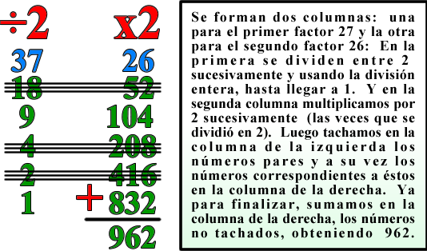
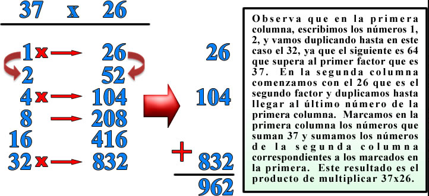
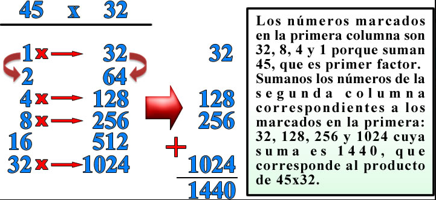
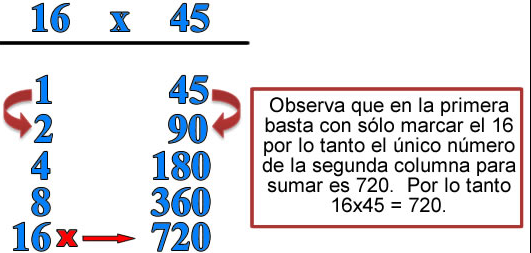
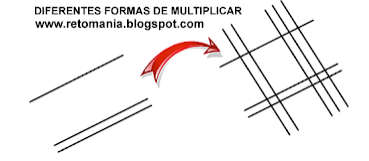
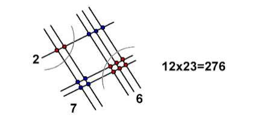
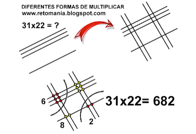
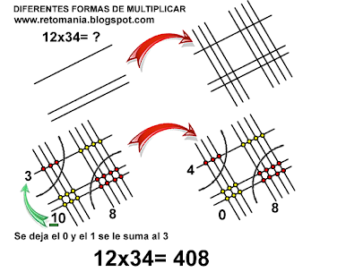
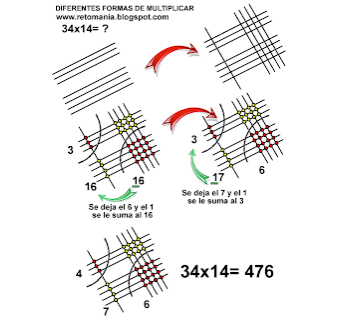
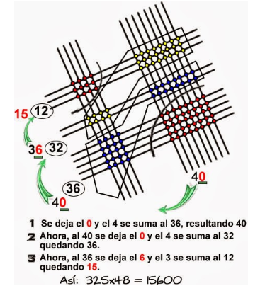

Este método consiste en escribir los dos números A y B que se van a multiplicar en la parte superior como formando dos columnas.
Se inicia dividiendo el número A en dos, sucesivamente, ignorando el resto, hasta llegar a la unidad.
A su vez, en la otra columna el número B se multiplica por 2 tantas veces como se ha dividido entre 2.
Se tachan todos los números pares de la primera columna y los correspondientes de la otra columna.
Se suman todos los números de la segunda columna (no tachados).
Sigamos con el mismo ejemplo, multiplicar 37 x 26:

Observemos como este método sólo exige divisiones por 2 y duplicaciones, además de la suma final.
De hecho, hasta hace poco tiempo, a´si era que los campesinos de Rusia multiplicaban, y hay evidencias de uso reciente en Alemania, Francia e Inglaterra. Por otro lados, es muy semejante al método empleado por los egipcios 20 siglos antes de la era cristiana.
El método utilizado en el antiguo Egipto sólo requiere saber sumar. Si queremos multiplicar AxB, desarrollamos lo siguiente:
Se forman dos columnas, en la primera columna escribimos la serie de números 2n, uno debajo de otro, es decir, 1, 2, 4, 8, 16 . . . , hasta que 2n, sea menor o igual que el número A.
En la segunda columna, se va escribiendo uno debajo de otro, el doble de cada número, empezando por el número B, hasta el último número de la primera columna.
En la primera columna se marcan, puede ser con una x, los números cuya suma sea igual al número A.
Sumamos los números correspondiente de la segunda columna a los marcados de la primera. Este resultado es el producto de los números A y B.
Continuando con el primer ejemplo, multipliquemos 37x26

Si queremos multiplicar 45 x 32

Al multiplicamos 16 x 45, se presenta un caso especial, veamos:

Este método de multiplicación se basa en trazar tantas líneas como indique cada uno de los dígitos del número y luego se cuentan los puntos que quedan. Veamos un ejemplo: Multiplicar 12x23.
Lo primero que hay que hacer es de acuerdo al primer factor que es 12, trazar un línea correspondiente al primer dígito e inmediatamente después, dejando un espacio 2 líneas que corresponden al segundo dígito del primer factor.
Se hace lo mismo con el segundo factor que 23, es decir se trazan 2 líneas correspondientes al primer dígito del factor y que se corten con las líneas anteriores y luego 3 líneas correspondientes al segundo dígito, como se observa en la figura:

Ahora se trazan dos arcos como se puede observar en la siguiente figura y procedemos a contar los puntos de cada área, así:

Observa: Si se cuentan los puntos del área que cubre el primer arco, tenemos 2, luego contamos con del segundo arco y tenemos 6 y al contar los puntos centrales tenemos 7, por lo tanto el resultado es: 12x23=276.
Veamos un segundo ejemplo: Multiplicar 31x22

No necesitamos calculadora, tampoco sabernos las tablas de multiplicar, sólo una hoja de papel, un lápiz, trazar rayas y por último contar puntos, así de fácil.
Y si la suma de los puntos es mayor o igual que 10 qué hacemos en este caso: Multipliquemos 12x34.

Hallemos ahora el producto de multiplicar 34x14.

Como respuesta a un interrogante por parte de un seguidor, publicamos la multiplicación 325x48. Veamos:
